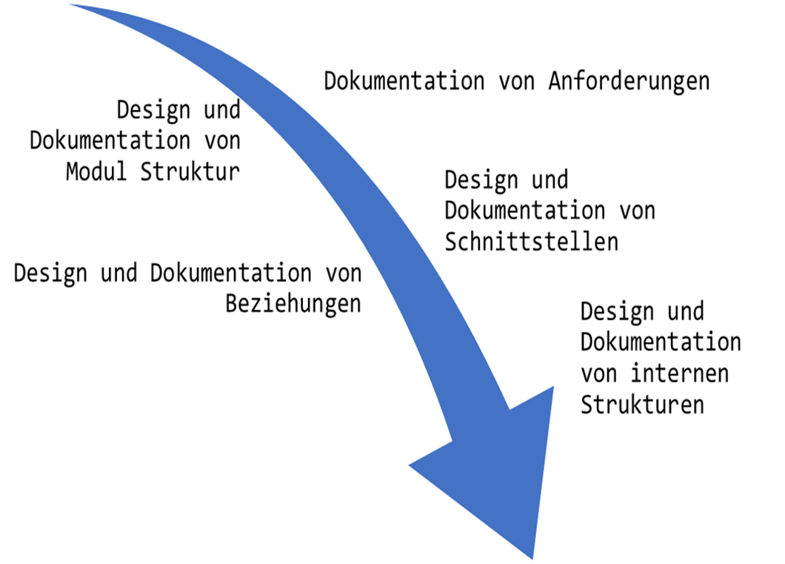

Paperbesprechung:
- A Rational Design Process -
Marcel Lüthi
Departement Mathematik und Informatik
Überblick
These:
Der ideale Softwareprozess ist die
systematische Ableitung der Software von Anforderungen.
- Der ideale Prozess kann nie erreicht werden
- Wir können ihn aber annähern
Metaphor: Mathematischer Beweise
Präsentation
- Starten mit klaren Anforderungen
- Schrittweise logische deduktion
- Schlussfolgerung / Resultat beschreiben
Realität
- Ausprobieren, Simulieren, Visualisierung
- Erster Beweis
- Oft kompliziert und umständlich
- Beweis vereinfachen
Interesse gilt Endresultat nicht Prozess.
Idealer Prozess in Software Engineering

Rolle von Dokumentation in diesem Prozess
- Festhalten von Entscheidungen
- Was wurde entschieden?
- Wieso wurde es entschieden?
Anforderungen von aktuellen Entwicklern
sowie künftigen Entwicklern gerecht werden.
Warum erreichen wir den idealen Prozess nicht?
- Auftraggeber wissen nicht was sie wollen
- ... oder können Details nicht so spezifizieren dass man Programme entwicklen kann
- Entwickler/Analysten sind mit der Fülle von Details überfordert
- Änderungen in Anforderungen
- Entwickler / Analysten sind fehlbar und voreingenommen
- Wirtschaftliche Einschränkungen
- Wiederverwendung von bestehenden Komponenten
Wie soll man vorgehen
- Ideal im Kopf behalten
- Dokumente schreiben.
- Unklarheiten aussparen und markieren
- Sobald etwas klar wird, ergänzen
- Templates / vorstrukturierte Dokumente nutzen
Was bedeutet das?
- Gute Projektdokumentation wird gebraucht.
- Während Entwicklung
- Als Grundlage in Wartungsphase
- Dokumentation sollte idealem Prozess folgen - Rationale Schritte
- Prozess kann (sollte/muss) ganz anders verlaufen.
Der Artikel wurde 1987 geschrieben. Ansatz ist vollkommen kompatibel mit modernen, agilen Vorgehensmodellen.